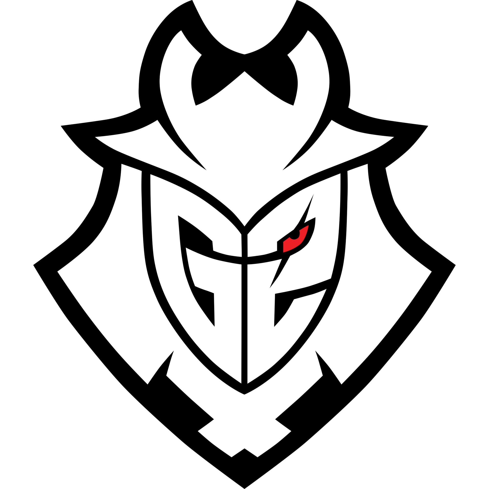

G2

G2 Esports (antes conocido como Gamers2) es una organización de origen español dedicada a los deportes electrónicos fundada en 2014 por Carlos "Ocelote" Rodríguez Santiago y con sede en Berlín, Alemania. La organización compite en diversos videojuegos, entre los que se incluyen League of Legends, Hearthstone: Heroes of Warcraft, Counter-Strike: Global Offensive,Fortnite, Tom Clancy's Rainbow Six: Siege, Valorant o Rocket League.
Giants
Giants Gaming, o simplemente Giants, anteriormente conocido como Vodafone Giants, es una organización dedicada a los deportes electrónicos fundada en 2008 y con sede en Málaga, España. Entre los videojuegos en los que compite la organización se encuentran League of Legends, Counter-Strike: Global Offensive, Tom Clancy's Rainbow Six: Siege, Fortnite o FIFA.